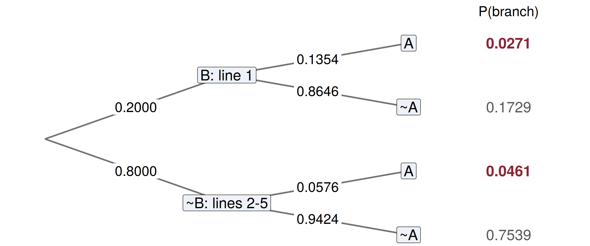

Mathematical Statistics
The Law of Total Probability and Bayes’ Rule
Samir Orujov, PhD
ADA University, School of Business
Information Communication Technologies Agency, Statistics Unit
2026-09-24
🎯 Learning Objectives
By the end of this lecture, you will be able to:
Recognise a partition of \(S\) (Definition 2.11) and choose one that makes the conditionals easy
Compute \(P(A)\) by the law of total probability (Theorem 2.8), branch by branch
Invert a conditional with Bayes’ rule (Theorem 2.9), reading the answer off a tree diagram
Explain why an accurate screen for a rare event produces mostly false alarms
Update a probability twice, using two conditionally independent signals in sequence
🗺️ Where We Are
Wackerly §2.10
Last class ended on this: what to do when the event depends on which state the world is in — the law of total probability and Bayes’ rule.
A loan’s chance of default depends on its rating grade. A flagged card payment is fraud more often if fraud is common. In both cases \(P(A \mid \text{state})\) is easy; \(P(A)\) is not.
Today: add up over the states to get \(P(A)\), then run the conditional backwards to learn the state from \(A\).
💳 A Question Before Any Notation
A Baku bank screens every card payment with a fraud model.
- It flags 95% of fraudulent payments
- It clears 97% of legitimate ones
- About 1 payment in 500 is fraudulent
A payment has just been flagged. Is it probably fraud?
Write down a number now. We will come back to it.
📐 Definition 2.11: A Partition
Definition 2.11
For some positive integer \(k\), let the sets \(B_1, B_2, \ldots, B_k\) be such that
- \(S = B_1 \cup B_2 \cup \cdots \cup B_k\)
- \(B_i \cap B_j = \emptyset\), for \(i \neq j\).
Then the collection \(\{B_1, B_2, \ldots, B_k\}\) is said to be a partition of \(S\).
Every loan has exactly one rating grade: the grades cover the book and never overlap. “Rated A”, “rated B” and “in arrears” are not a partition — a loan can be B and in arrears.
📐 Theorem 2.8: Total Probability
Theorem 2.8
If \(\{B_1, \ldots, B_k\}\) is a partition of \(S\) with \(P(B_i) > 0\) for every \(i\), then for any event \(A\) \[P(A) = \sum_{i=1}^{k} P(A \mid B_i)\,P(B_i)\]
Proof in one line. \(A = (A \cap B_1) \cup \cdots \cup (A \cap B_k)\), and these pieces are mutually exclusive, so Axiom 3 adds them. Theorem 2.5 writes each piece as \(P(A \mid B_i)P(B_i)\).
🏦 Default Across Three Grades
A bank’s SME loan book is split by internal rating grade. \(D\) is the event that a loan defaults within the year.
| Grade | Share of book \(P(B_i)\) | Default rate \(P(D \mid B_i)\) | Product |
|---|---|---|---|
| A | 0.50 | 0.01 | 0.005 |
| B | 0.35 | 0.04 | 0.014 |
| C | 0.15 | 0.12 | 0.018 |
| 1.00 | 0.037 |
\[P(D) = 0.005 + 0.014 + 0.018 = 0.037\] The book-wide default rate, 3.7%, is a weighted average of the grade rates, with the grade shares as weights.
📐 Theorem 2.9: Bayes’ Rule
Theorem 2.9 (Bayes’ Rule)
If \(\{B_1, \ldots, B_k\}\) is a partition of \(S\) with \(P(B_i) > 0\) for every \(i\), then \[P(B_j \mid A) = \frac{P(A \mid B_j)\,P(B_j)}{\sum_{i=1}^{k} P(A \mid B_i)\,P(B_i)}\]
The numerator is one row of the table: \(P(A \cap B_j)\). The denominator is the total: \(P(A)\) from Theorem 2.8. Bayes’ rule is Definition 2.9 with both pieces filled in.
🔄 Running the Loan Book Backwards
A loan has defaulted. Which grade did it come from?
\[P(C \mid D) = \frac{0.018}{0.037} = 0.486, \quad P(B \mid D) = \frac{0.014}{0.037} = 0.378, \quad P(A \mid D) = \frac{0.005}{0.037} = 0.135\]
Grade C is 15% of the book but 49% of the defaults. The three posteriors sum to 1 because they divide one partition’s products by their own total.
Prior \(P(B_j)\): what you believed before the default. Posterior \(P(B_j \mid D)\): what you believe after.
🌳 Example 2.23: A Card Batch
A card manufacturer personalises chip cards on five lines at equal rates. Normally 2% of chips are defective. In March line 1 malfunctioned and produced 5% defectives.
A bank receives a March batch of 100 cards, tests three, and exactly one fails. What is the probability the batch came from line 1?
Let \(B\) = “batch from line 1” and \(A\) = “exactly one of three fails”. Then \(P(B) = 0.2\), \(P(\bar{B}) = 0.8\), and \[P(A \mid B) = 3(0.05)(0.95)^2 = 0.135375, \qquad P(A \mid \bar{B}) = 3(0.02)(0.98)^2 = 0.057624\]
🌳 The Tree

Multiply along a path (Thm 2.5); add across the paths ending in \(A\) (Thm 2.8).
🌳 Reading the Answer Off the Tree
The two red leaves are the paths that end in \(A\): \[P(A) = 0.0271 + 0.0461 = 0.0732\]
Bayes’ rule is one red leaf over both red leaves: \[P(B \mid A) = \frac{(0.135375)(0.2)}{0.0731742} = 0.37, \qquad P(\bar{B} \mid A) = 1 - 0.37 = 0.63\]
One failure in three nearly doubles the chance of line 1, from 0.20 to 0.37 — and still leaves the other four lines the likelier source.
⚠️ Back to the Fraud Screen
\(F\) = fraud, \(T\) = flagged. \(P(F) = 0.002\), \(P(T \mid F) = 0.95\), \(P(T \mid \bar{F}) = 0.03\). \[P(F \mid T) = \frac{0.95 \times 0.002}{0.95 \times 0.002 + 0.03 \times 0.998} = \frac{0.0019}{0.03184} = 0.060\]
Six percent. In 100,000 payments: 200 are fraud and 190 of them are flagged; 99,800 are legitimate and 2,994 of them are flagged. Of 3,184 flags, 190 are fraud.
This is the base-rate paradox: the screen is accurate, but the legitimate pool is so large that its 3% error outnumbers all the fraud there is.
🔬 Interactive: Posterior vs Base Rate
Code
sens = 0.95
fpr = 0.03
posterior = p => p * sens / (p * sens + (1 - p) * fpr)
grid = Array.from({length: 121}, (_, i) => {
const pct = 0.1 * Math.pow(500, i / 120);
return {pct: pct, post: posterior(pct / 100)};
})
current = [{pct: base_pct, post: posterior(base_pct / 100)}]
md`Screen fixed at 95% / 97%. At a base rate of **${base_pct.toFixed(1)}%**, a flag means fraud with probability **${(100 * current[0].post).toFixed(1)}%**.`Code
Plot.plot({
width: 1150,
height: 310,
marginLeft: 78,
marginTop: 40,
marginBottom: 58,
style: {fontSize: "18px"},
x: {type: "log", domain: [0.1, 50], label: "Base rate of fraud (%, log scale)",
ticks: [0.1, 0.2, 0.5, 1, 2, 5, 10, 20, 50], tickFormat: d => String(d)},
y: {label: "P(fraud | flagged)", domain: [0, 1], tickFormat: ".1f"},
marks: [
Plot.ruleY([0.5], {stroke: "#cbb8a9", strokeDasharray: "4 4"}),
Plot.line(grid, {x: "pct", y: "post", stroke: "#14130f", strokeWidth: 2}),
Plot.dot(current, {x: "pct", y: "post", r: 9, fill: "#8b2635"}),
Plot.ruleY([0])
]
})🔧 What Would Actually Help?
Code
posterior <- function(base, sens, fpr) base * sens / (base * sens + (1 - base) * fpr)
data.frame(
design = c("current", "sensitivity 99.9%", "false alarms 1%",
"false alarms 0.1%", "base rate 2%"),
base = c(0.002, 0.002, 0.002, 0.002, 0.02),
sens = c(0.95, 0.999, 0.95, 0.95, 0.95),
fpr = c(0.03, 0.03, 0.01, 0.001, 0.03)
) |> transform(posterior = round(posterior(base, sens, fpr), 3)) design base sens fpr posterior
1 current 0.002 0.950 0.030 0.060
2 sensitivity 99.9% 0.002 0.999 0.030 0.063
3 false alarms 1% 0.002 0.950 0.010 0.160
4 false alarms 0.1% 0.002 0.950 0.001 0.656
5 base rate 2% 0.020 0.950 0.030 0.393Catching more fraud barely moves it. Cutting false alarms does — the denominator is where the legitimate pool lives. The posterior crosses 50% at a base rate of \(0.03/0.98 = 3.1\%\).
🔁 Sequential Updating
Flagged payments go to a device check: it fails for 90% of fraudulent payments and 5% of legitimate ones. Given fraud status, the two signals are conditionally independent.
Today’s posterior is tomorrow’s prior. After the flag, \(P(F) = 0.0597\). Apply Bayes’ rule again with the device check: \[P(F \mid T \cap V) = \frac{0.90 \times 0.0597}{0.90 \times 0.0597 + 0.05 \times 0.9403} = 0.533\]
Or do it in one step from the start, multiplying the conditionals (independence given \(F\)): \[\frac{0.002 \times 0.95 \times 0.90}{0.002 \times 0.95 \times 0.90 + 0.998 \times 0.03 \times 0.05} = \frac{0.00171}{0.003207} = 0.533\]
💻 Two Routes, One Answer
Code
bayes <- function(prior, hit, false_alarm) {
prior * hit / (prior * hit + (1 - prior) * false_alarm)
}
p0 <- 0.002 # base rate
p1 <- bayes(p0, 0.95, 0.03) # after the model flags it
p2 <- bayes(p1, 0.90, 0.05) # after the device check fails too
one_step <- bayes(p0, 0.95 * 0.90, 0.03 * 0.05)
round(c(prior = p0, after_flag = p1, after_both = p2, one_step = one_step), 4) prior after_flag after_both one_step
0.0020 0.0597 0.5332 0.5332 The order of the checks does not matter, and neither does whether you stop in between. Without conditional independence the one-step route would need \(P(V \mid T \cap F)\), not \(P(V \mid F)\).
🧠 Think-Pair-Share
A mobile operator’s subscribers are 60% prepaid, 30% postpaid and 10% business. Monthly churn rates are 6%, 2% and 1%.
Four minutes, in pairs:
What share of all subscribers churn this month?
A subscriber has just churned. What is the probability they were prepaid?
A subscriber stayed. What is the probability they are business?
✅ Think-Pair-Share: Solution
Let \(L\) = the subscriber leaves. Theorem 2.8 over the three plans: \[P(L) = 0.6(0.06) + 0.3(0.02) + 0.1(0.01) = 0.036 + 0.006 + 0.001 = 0.043\]
Theorem 2.9: \(P(\text{prepaid} \mid L) = 0.036 / 0.043 = 0.837\).
- The same partition, with \(\bar{L}\) in place of \(L\). \(P(\bar{L}) = 1 - 0.043 = 0.957\) and \[P(\text{business} \mid \bar{L}) = \frac{0.1 \times 0.99}{0.957} = 0.103\] Staying tells you almost nothing — nearly everyone stays — so the posterior barely moves off the 10% prior.
📝 Quiz #1: Total Probability
\(\{B_1, B_2\}\) is a partition with \(P(B_1) = 0.7\). \(P(A \mid B_1) = 0.1\) and \(P(A \mid B_2) = 0.4\). What is \(P(A)\)?
- \(0.19\)
- \(0.25\)
- \(0.50\)
- \(0.28\)
📝 Quiz #2: Bayes’ Rule
Same partition as Quiz #1. Given that \(A\) occurred, what is \(P(B_2 \mid A)\)?
- \(0.63\)
- \(0.40\)
- \(0.12\)
- \(0.30\)
📝 Quiz #3: The Base-Rate Paradox
A screen for a rare event (base rate 0.2%) has 95% sensitivity and a 3% false-alarm rate. Which change raises \(P(\text{event} \mid \text{flag})\) the most?
- Raising sensitivity to 99.9%
- Cutting the false-alarm rate to 0.1%
- Screening twice as many payments
- Raising sensitivity to 100%
📋 Key Formulas
| Statement | |
|---|---|
| Definition 2.11 | \(S = B_1 \cup \cdots \cup B_k\), \(\; B_i \cap B_j = \emptyset\) for \(i \neq j\) |
| decomposition | \(A = (A \cap B_1) \cup \cdots \cup (A \cap B_k)\) |
| Theorem 2.8 | \(P(A) = \sum_{i=1}^k P(A \mid B_i)P(B_i)\) |
| Theorem 2.9 | \(P(B_j \mid A) = \dfrac{P(A \mid B_j)P(B_j)}{\sum_{i=1}^k P(A \mid B_i)P(B_i)}\) |
| two signals, independent given \(B_j\) | \(P(B_j \mid A_1 \cap A_2) \propto P(A_1 \mid B_j)P(A_2 \mid B_j)P(B_j)\) |
📋 Summary
A partition splits \(S\) into states that cover everything and never overlap
Total probability is a weighted average of the conditionals, weighted by the states
Bayes’ rule is one branch of the tree divided by all the branches that end in \(A\)
For a rare event, even an accurate screen gives a small posterior: the base rate dominates
False alarms, not missed detections, are what a rare-event screen must cut
Updating is sequential: yesterday’s posterior is today’s prior
📚 Practice Problems
Wackerly, 7th edition
Exercises at the end of §2.10 — start with 2.124, 2.125 and 2.129, then 2.126 – 2.127 on sensitivity and specificity, and 2.132
Re-draw today’s card-batch tree with \(P(A \mid B)\) lowered to 0.12, and find \(P(B \mid A)\) (compare Exercise 2.123(b))
Week 4, Problem Set 2 is open now and closes Sunday 11 October at 23:59 on WeBWorK, covering §2.10.
Next class: turning outcomes into numbers — random variables, random sampling, and a synthesis of Chapter 2 (§§2.11–2.13).
🙏 Thank You
Dr. Samir Orujov
📧 sorujov@ada.edu.az
🏢 Building D, Room D325
🕓 Office hours: Wednesday, 16:00 – 18:00
Slides and readings: sorujov.net/teaching
❓ Questions
A flag on the fraud screen raised the probability from 0.2% to 6%. Is that a failure of the screen, or a success?
If the two fraud signals were positively correlated among legitimate payments, would the one-step answer be too high or too low?
Why must every \(P(B_i)\) be strictly positive in Theorems 2.8 and 2.9?

Mathematical Statistics I - Total Probability and Bayes’ Rule